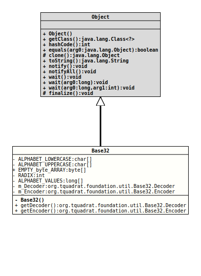

java.lang.Object
org.tquadrat.foundation.util.Base32
@ClassVersion(sourceVersion="$Id: Base32.java 1060 2023-09-24 19:21:40Z tquadrat $")
@API(status=STABLE,
since="0.1.0")
@UtilityClass
public final class Base32
extends Object
This class provides an Encoder and a Decoder for Crockfords's Base 32 format.
Base 32 allows to represent large numbers as strings with less characters than Base 10 (the regular decimal system) or Base 16 (the hexadecimal system). It has the advantage over Base 64 that it uses less symbols, and no special characters.
While Base is mainly for (large) numbers, it can be used for strings, to, in the same way as Base 64. But different from that, Base 32 is not really standardized; this version, introduced by Douglas Crockford, is just one among various others.
- Author:
- Thomas Thrien (thomas.thrien@tquadrat.org)
- Thanks to:
- Douglas Crockford (douglas@crockford.com)
- Version:
- $Id: Base32.java 1060 2023-09-24 19:21:40Z tquadrat $
- Since:
- 0.1.0
- UML Diagram
-

UML Diagram for "org.tquadrat.foundation.util.Base32"
{kind=link}
-
Nested Class Summary
Nested ClassesModifier and TypeClassDescriptionstatic final classThe Decoder for Crockfords's Base 32 format.static final classThe Encoder for Crockfords's Base 32 format. -
Field Summary
FieldsModifier and TypeFieldDescriptionprivate static final char[]The lowercase symbols for the Base 32 alphabet.private static final char[]The uppercase symbols for the Base 32 alphabet.private static final long[]The symbol values.static final byte[]An empty byte array.private static final Base32.DecoderThe Base 32 decoder instance.private static final Base32.EncoderThe Base 32 encoder instance.private static final intThe radix for Base 32 is, as one would expect: 32. -
Constructor Summary
Constructors -
Method Summary
Modifier and TypeMethodDescriptionstatic final Base32.DecoderReturns a decoder for Crockfords's Base 32 format.static final Base32.EncoderReturns an encoder for Crockfords's Base 32 format.
-
Field Details
-
ALPHABET_LOWERCASE
The lowercase symbols for the Base 32 alphabet. -
ALPHABET_UPPERCASE
The uppercase symbols for the Base 32 alphabet. -
EMPTY_byte_ARRAY
An empty byte array. -
RADIX
The radix for Base 32 is, as one would expect: 32.- See Also:
-
ALPHABET_VALUES
The symbol values. -
m_Decoder
The Base 32 decoder instance. -
m_Encoder
The Base 32 encoder instance.
-
-
Constructor Details
-
Base32
private Base32()No instance allowed for this class.
-
-
Method Details
-
getDecoder
Returns a decoder for Crockfords's Base 32 format.- Returns:
- The decoder.
-
getEncoder
Returns an encoder for Crockfords's Base 32 format.- Returns:
- The encoder.
-